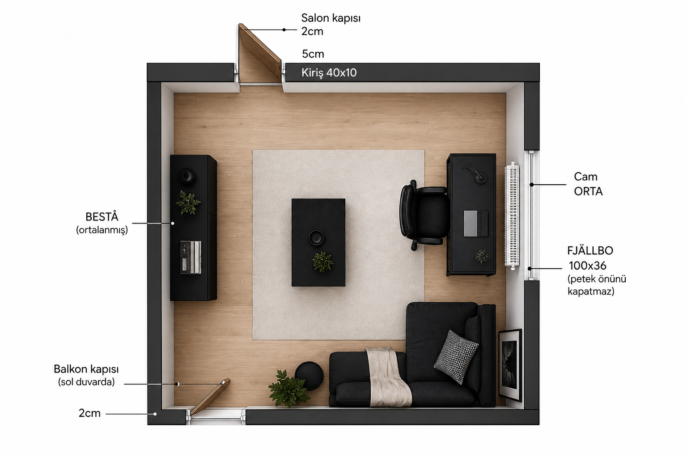
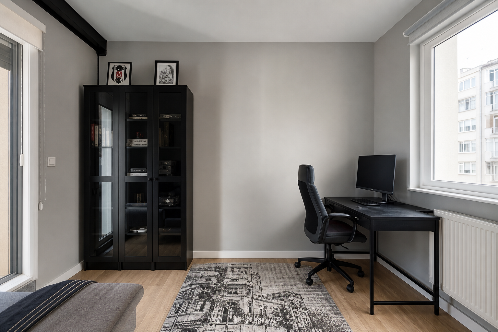

2 → Salon → 5 → Kiriş 40 cm sağa → boş duvar
Kapılar 2 cm boşluktan başlar. Salon sonrası 5 cm, sonra kiriş sağa doğru 40 cm (içe 10 cm). Kirişten sonra düz duvar boşluğu köşeye kadar. Kiriş hattına mobilya yok.
Sipariş öncesi · krokiye birebir · uydurma yok
Önceki dekor görselleri krokiyle çelişiyordu. Bu sayfa sadece sabit plana göre, alınacak gerçek ürünler.
Alışveriş bu plana göre. Eski “tasarım” görselleri buna uymuyorsa yok say.

Kapılar 2 cm boşluktan başlar. Salon sonrası 5 cm, sonra kiriş sağa doğru 40 cm (içe 10 cm). Kirişten sonra düz duvar boşluğu köşeye kadar. Kiriş hattına mobilya yok.
Cam (petek altında) sağ duvarın geometrik ortasında. Masa peteğin önüne gelmez; ortadaki cam-petek bloğunun altındaki veya üstündeki eşit bantlardan birine.
Sol duvar ile balkon kapısı arası 2 cm. Kapı sola içeri açılır; oturma balkonun sağında.
BESTÅ ortada; üst/alt kapı salınım yaylarından uzak.


Cam sağ duvarın ortasında → üst ve alt pay yaklaşık eşit.
1) Cam-petek bloğunun altından sağ-alt köşeye cm ölç.
2) Cam-petek bloğunun üstünden sağ-üst köşeye cm ölç.
3) ≥ 110 cm olan banda FJÄLLBO 100×36 (tercihen alt bant — priz/kablo kolay).
4) İkisi de kısa ise 140’lık alma; yaz.
BESTÅ 120×42×193. Üstten (salon salınımı) ve alttan (balkon salınımı) en az ~80–90 cm boşluk bırak. Köşeye yapıştırma.
Balkon salınımı sola gittiği için alt duvarın sağ tarafı boş. Max 140 cm ikili / ofis kanepe. Vivense siyah/antrasit.
Kiriş önü · salon önü · balkon önü · petek önü (en az peteğin kendi derinliği + 5 cm).
Ölçmeden alınmayacaklar ayrı işaretli. Linkler gerçek IKEA TR / Vivense.
Kod: 303.397.35
Nereye: Sağ duvar, petek kapatmadan (peteğin altı veya üstü bant).
Neden 100×36: Cam/petek bandına 140×70 riskli; önce bu güvenli.
Şart: Petek yanı boşluk ≥ 110 cm (masa 100 + 5+5 pay). Ölç, sonra sipariş ver.
Kod: 702.611.50
Masayla birlikte. Salınımı kesmeyecek şekilde masanın önünde.
Kod: 590.594.61
Nereye: Sol duvar ortası.
Şart: Sol duvar net boyunu ölç. Üst ve alt kapı salınımından sonra ortada ≥ 130 cm düz alan olmalı (120 + pay).
Mutlaka duvara sabitle (devrilme).
Nereye: Alt duvar, balkon kapısının sağı.
Şart: Balkon kasasından sağ köşeye kadar net cm ölç; 140+10 pay sığmazsa tekli al.
Ancak petek yanı / altı bantta ≥ 155 cm düz duvar ölçersen. Yoksa alma — peteğin önüne koyma.
sadece referans →Cam genişliğini ölç → stor’u o ene sipariş et. Petek üstüne ağır perdenin oturmasına izin verme.
ölçüyle sipariş →Beşiktaş siyah mobilya için duvar açık kalmalı. Forma rengi değil.
Ürün: Momento Max veya Momento Silan — soft mat / ipek mat.
Renk: açık gri Andezit 15 (daha açık istersen Andezit 10).
Uygulama: 4 duvar aynı. Önce 1 m² numune / kartela duvarda bak (ekran rengi yanıltır).
Link: filliboya.com/renkler
A (önerilen): Duvarla aynı Andezit — kiriş kaybolur, oda büyür.
B: Mat siyah (aynı markanın mat siyahı) — sadece 40×10 cm çıkıntı yüzleri; abartma, tavanı boyama.
Mevcut beyaz kapı ve pervazlar kalsın. Siyah mobilya ile kontrast tamam.
Mevcut ahşap desen laminat uyumlu. Siparişe gerek yok. İstersen düz antrasit ince halı (logosuz) oturma önüne.
Bunlar olmadan 140’lık masa veya kanepe alma.